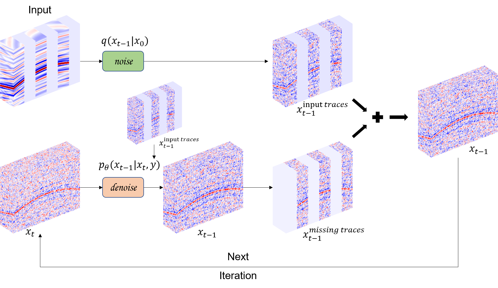
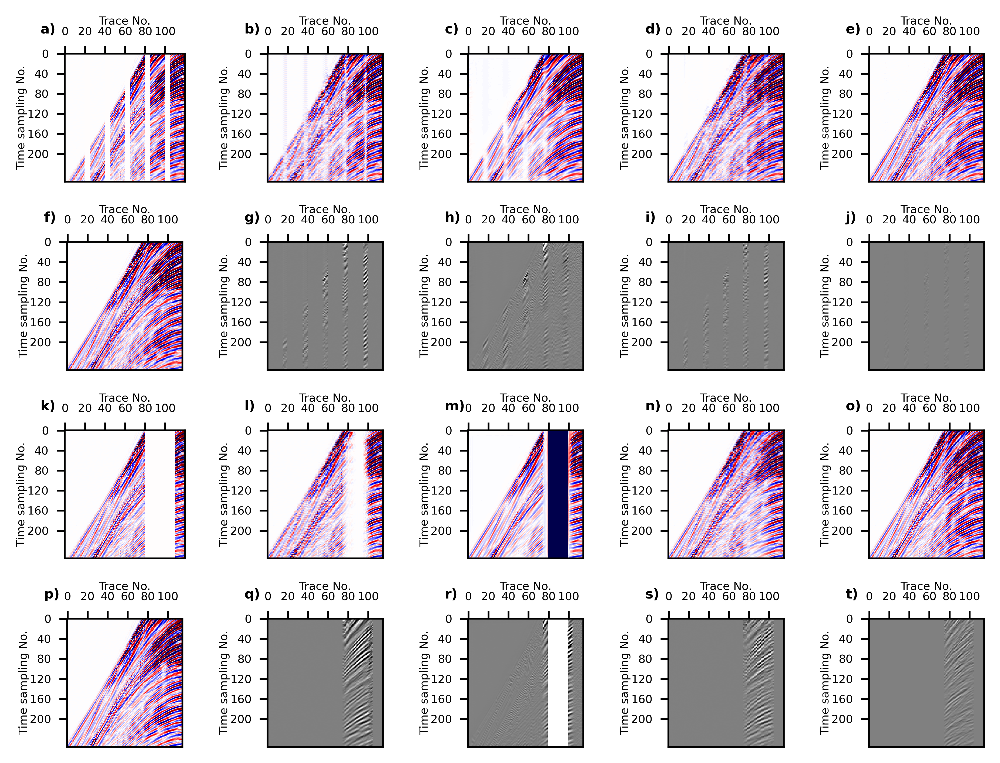

Seismic data often suffer from missing traces, and traditional reconstruction methods are cumbersome in parameterization and struggle to handle large-scale missing data. While deep learning has shown powerful reconstruction capabilities, convolutional neural networks’ point-to-point reconstruction may not fully cover the distribution of the entire dataset and may suffer performance degradation under complex missing patterns. In response to this challenge, we propose a novel diffusion model reconstruction framework tailored for 3D seismic data. To facilitate three-dimensional seismic data reconstruction using diffusion models, we introduce conditional constraints into the diffusion model, constraining the generated data of the diffusion model based on the input data to be reconstructed. We introduce a 3D neural network architecture into the diffusion model and refine the diffusion model’s generation process by incorporating existing parts of the data into the generation process, resulting in reconstructions with higher consistency. Through ablation studies determining optimal parameter values, although the sampling time is longer, our method exhibits superior reconstruction accuracy when applied to both field datasets and synthetic datasets, effectively addressing a wide range of complex missing patterns. Our implementation is available at https://github.com/WAL-l/SeisFusion.
Read more about thisReconstruction of complete seismic data is a crucial step in seismic data processing, which has seen the application of various convolutional neural networks (CNNs). These CNNs typically establish a direct mapping function between input and output data. In contrast, diffusion models which learn the feature distribution of the data, have shown promise in enhancing the accuracy and generalization capabilities of predictions by capturing the distribution of output data. However, diffusion models lack constraints based on input data. In order to use the diffusion model for seismic data interpolation, our study introduces conditional constraints to control the interpolation results of diffusion models based on input data. Furthermore, we improving the sampling process of the diffusion model to ensure higher consistency between the interpolation results and the existing data. Experimental results conducted on synthetic and field datasets demonstrate that our method outperforms existing methods in terms of achieving more accurate interpolation results, with SSIM outperforming existing methods by 4.1% and SNR by 24%. Our implementation is available at https://github.com/WAL-l/Reconstruction.
Read more about this